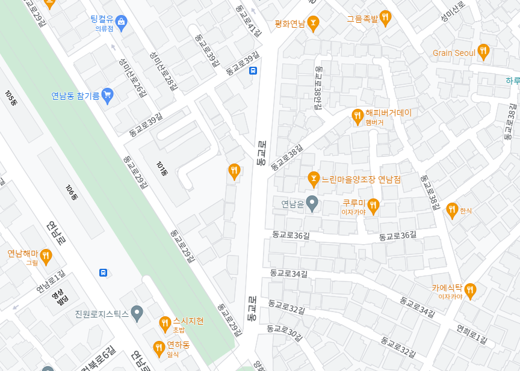
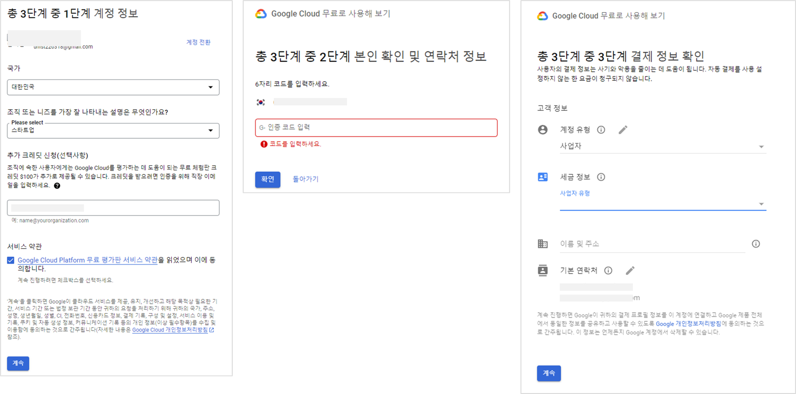
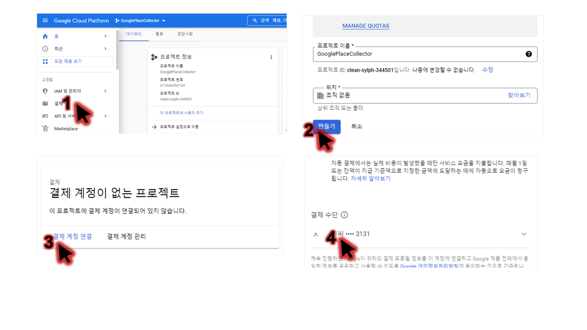
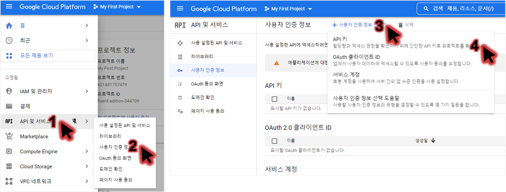
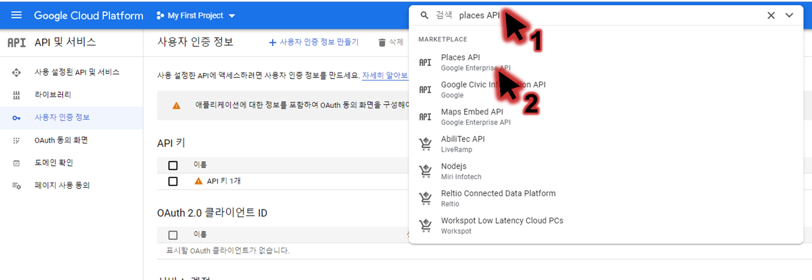
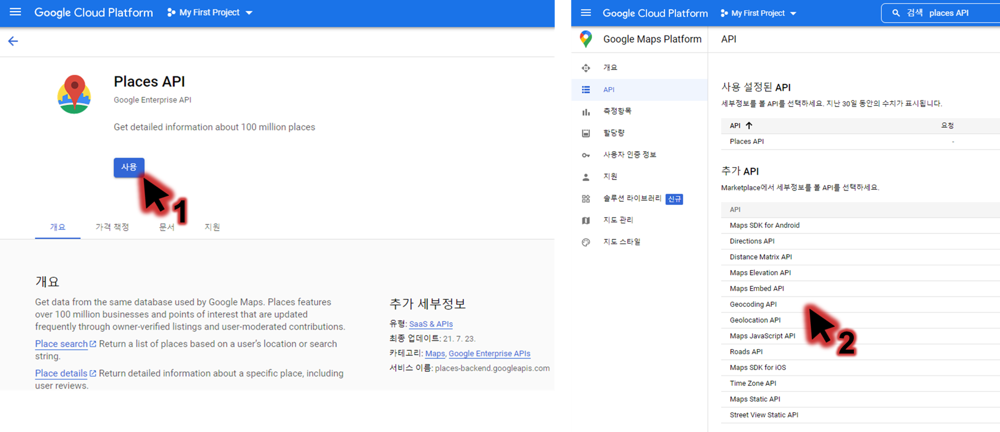
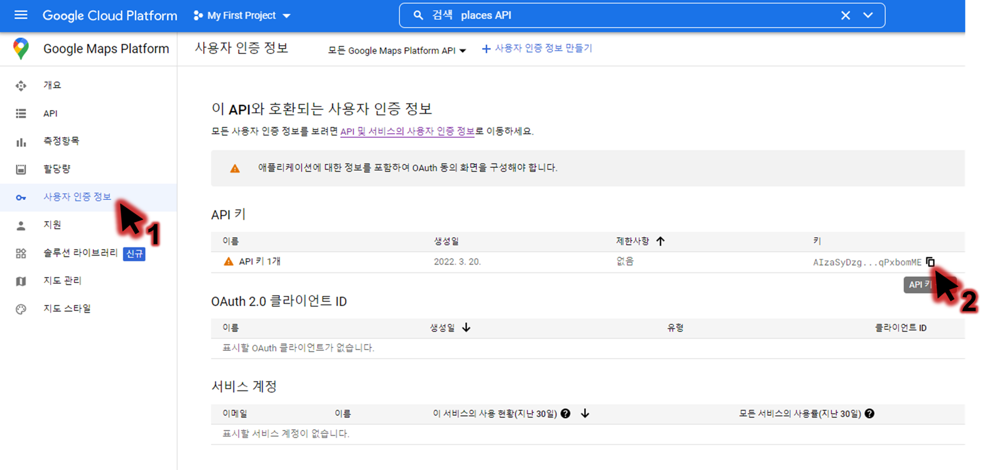
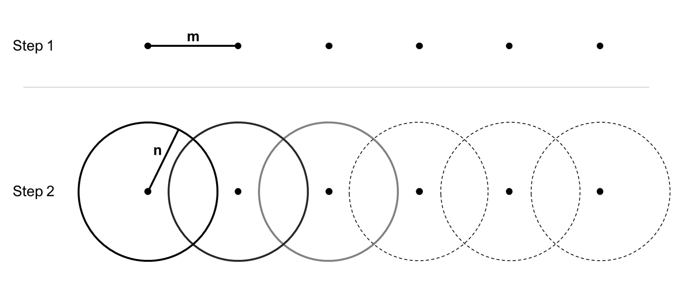
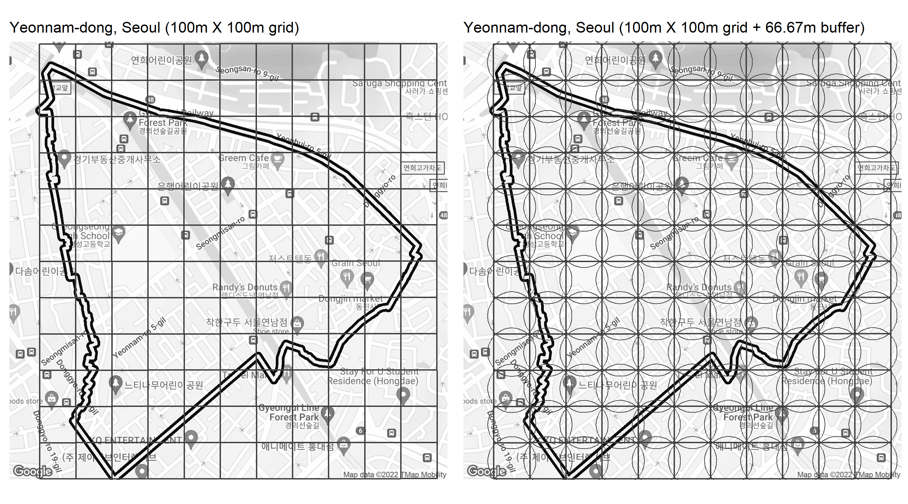
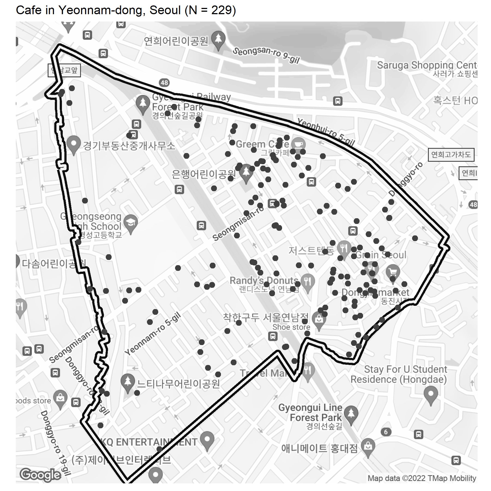

library(googleway)
res <- google_places(
search_string = "마포구 공원", # 검색하는 키워드
key = key, # 자신의 구글 API key
language = "ko", # 한국어 설정
)서론
구글 지도에는 도시 분석에 활용할 수 있는 다양한 정보가 등록되어 있다. 아래는 서울 연남동을 구글 지도에 검색한 결과다.

이 범위 내, 음식점이 얼마나 많이 있을까? 평점이 높은 음식점은 어디에 몰려있을까? 구글 지도에 등록된 음식점, 카페와 같은 POI 정보를 수집하면 이에 답할 수 있다. 구글 API와 R을 활용하여 이 구글 지도 POI를 수집하는 방법에 대해 아래 다루고자 한다.
주의사항
Important
구글 API는 무료가 아니다.
특히 이 블로그에서 활용하는 Place API는 쓴만큼 지불하는 모델(pay-as-you-go pricing mdoel)을 사용하므로, 사용하기 전 비용 추정을 철저하게 하는 것이 좋다. 무턱대고 돌리다가는 엄청난 비용이 부과될 수 있다.
Tip
구글 클라우드는 첫번째로 만드는 결제 계정에 한해 300달러 클레딧을 지급한다.
다른 설정을 하지 않으면 무료 크레딧 사용 이후, 기입한 카드로 금액이 청구되는 일은 없었다. 추가로, 구글 API를 활용하는 목적이 구글 사용 약관(Terms of Service)에 위배되는지를 사전에 확인해야 한다.
1. 구글 API key
구글 지도에 정보를 요청하고 응답 받기 위해선 구글 API key를 만들고 설정하는 것이 필요하다.
1.1. 클라우드 및 결제 설정
구글 클라우드에서 콘솔을 생성한다.
계정 정보와 본인 확인, 연락처 정보 및 결과 정보를 차례로 입력한다. 
이후, 구글 클라우드 플랫폼에서 결제 설정을 한다. 
1.2. API 생성 및 설정
사용할 API를 생성한다. 
사용할 서비스를 활성화시켜준다. 
Places API 외 googleway R 패키지를 활용하기 위해서는 Geocoding API 등 자신이 원하는 기능을 설정해주어야 한다. 
1.3. API 키 복사
- R에서 사용할 구글 API key는 아래에서 복사해서 사용한다. 
2. 연습
2.1. Googleway
Googleway은 R를 활용하여 Google API 요청과 응답 등을 도와주는 패키지다. 구글 지도 외 구글 스트리트뷰 이미지, 자전거 루트 검색 등 다양한 구글 API를 활용한 기능을 제공하며, 이 글에서는 Google Places API를 주로 활용한다.
2.2. Google Places API
Google Places API는 전세계 구글 지도에 등록된 POI 정보를 수집하는 데 쓰인다. 이 POI 정보는 우리가 구글 지도에서 검색하는 것과 같으며, 구글은 검색 방식을 3가지로 구분한다.
| 검색 방법 | 설명 | 검색 예시 |
|---|---|---|
| Text | 텍스트 검색 | 마포구 공원 |
| Nearby | 특정 장소(위도/경도) 주변 검색 | (37.557, 126.924) 주변 500m 중식집 |
| Place Detail | 특정 POI에 관한 구체적인 정보 | 연남동 소이연남 별점, 리뷰 수 등 |
각 방법에 대해 Googleway로 요청하고 응답 받는 방법은 아래와 같다.
Text
text 검색은 원하는 키워드를 구글 지도에서 검색하는 것이다. 마포구 공원을 검색하는 것을 예시로 들어보자.
보낸 쿼리 응답에서 장소 이름과 평균 평점을 뽑아내면 다음과 같다.
> cbind(res$results$name, res$results$rating)
[,1] [,2]
[1,] "경의선숲길공원" "4.6"
[2,] "마포 어린이 공원" "3.9"
[3,] "서울함 공원" "4.2"
[4,] "노을공원" "4.6"
[5,] "하늘공원" "4.5"
[6,] "망원한강공원" "4.4"
[7,] "경의선숲길" "4.4"
[8,] "성산근린공원" "4.2"
[9,] "평화의공원" "4.5"
[10,] "월드컵공원" "4.5"
[11,] "경의선공원길" "4.6"
[12,] "한강공원 마포나들목" "4.3"
[13,] "경의선숲길공원" "4.5"
[14,] "근린공원" "4"
[15,] "조각공원" "3.8"
[16,] "와우산체육공원" "4.2"
[17,] "복사꽃어린이공원" "3.9"
[18,] "한강공원망원지구" "4.2"
[19,] "합정공원" "3.7"
[20,] "윗잔다리공원" "4" 이외에도 user_ratings_total (구글 리뷰 총 개수), formatted_address (주소), geometry.location.lat/lng (위치좌표) 등이 수집된다.
추가로, 쿼리 응답은 상위 20개만 받을 수 있다. 그 외 데이터를 수집하기 위해서는 next_page_token을 활용하면 된다.
res_next <- google_places(
search_string = "마포구 공원", # 검색하는 키워드
key = key, # 자신의 구글 API key
language = "ko", # 한국어 설정
page_token = res$next_page_token # 기존 쿼리의 next_page_token
)Nearby
nearby 검색은 특정 좌표 기반 검색이며, POI 유형과 주변 검색 범위 등을 설정할 수 있다. 홍대입구역(위도: 126.924, 경도: 37.557) 근처 50m 내 위치한 음식점을 예시로 들어보자.
> res <- google_places(
+ location = c(37.557, 126.924), # 홍대입구역 위치 좌표
+ place_type = "restaurant", # POI type
+ radius = 50, # 주변 N meter
+ language = "ko", # 한국어
+ key = key # 자신의 구글 API key
+ )
>
> cbind(res$results$name, res$results$rating, res$results$place_id)
[,1] [,2] [,3]
[1,] "스시메이진 홍대점" "3.5" "ChIJR64R9cKYfDURFdUwoHMV9QI"
[2,] "PASTA e PIZZA" "4" "ChIJt6EGjcKYfDURFFHDTbzzr7M"
[3,] "애슐리" "4.5" "ChIJD5kR8MKYfDURrgorWW5NDqw"
[4,] "서가엔쿡 홍대입구점" "4" "ChIJnYYHQcGZfDURU6FbPQ2VQGU"
[5,] "아비꼬 홍대입구역 EXIT점" "3" "ChIJG-v8wraZfDURKfxX4RBsfIk"Place Detail
Place Detail 검색은 특정 POI에 대한 리뷰 정보를 수집하기 위해 활용된다. 구글에서 지정한 POI id인, place_id 기반이며, 위 예시에서 스시메이진 홍대점을 예시로 들어보자.
> det <- google_place_details(
+ place_id = "ChIJR64R9cKYfDURFdUwoHMV9QI", # 스시메이진 홍대점 id
+ key = key,
+ language = "ko"
+ )
>
> cbind(det$result$reviews$author_name, substr(det$result$reviews$text, 1, 20))
[,1] [,2]
[1,] "김진억" "평일 점심 가격대 가성비 좋다.\n다만"
[2,] "youngsun hong" "개인적으로 다시 가진 않을 것 같습니"
[3,] "최석하" "처음 가봤는데 음식도 맛있어서 좋았습"
[4,] "케이린_게임세상" "홍대역 바로 앞이라 그런지 가격은 좀"
[5,] "불꽃의초롱이" "홍대역 8번쪽에 있는 스시메이진 홍대"
Important
각 POI별 리뷰는 최대 5개까지만 응답받을 수 있다.
3. 실습
살펴본 Googleway로 실제 구글 지도 POI를 수집하는 과정을 다룬다.
3.1. R 실습 전
실습 질문은 아래와 같다.
"서울 연남동 내 카페은 몇 개고, 리뷰 개수와 평점이 가장 높은 곳은 어디인가?"
간단하게 접근하면 google_places를 사용해서 연남동 중심 좌표를 기준으로 모든 cafe POI를 수집하는 쿼리를 보내고, 그 쿼리의 next_page_token를 계속해서 넣으며 수집하면 된다.
하지만, 구글 API에서는 한 쿼리당 60개 이상 아이템을 수집하지 못한다. (link)
해결 방법은 다음과 같다.
- 연남동 지역을 m (meter) 간격으로 grid 나누기
- 한 grid 중심에서 n (meter) 이내 cafe POI를 수집 
Important
적절한 m과 n을 설정해야 한다. 아주 작은 값은 시간이 오래걸리고 구글 API 청구 비용이 증가하며, 너무 크다면 한 grid 내 POI가 60개가 넘어가 제대로 수집되지 않을 것이다.
3.2. R 실습
패키지 불러오기
필요한 패키지를 불러오고 없다면 설치한다.
# Package reading
Packages <- c("data.table", "stringr", "ggplot2", "sf", "tidyr", "sp", "googleway", "ggmap", "dplyr")
install_pkgs <- function(pkgs) {
# 신규 패키지 설치
new_pkgs <- pkgs[!(pkgs %in% installed.packages()[, "Package"])]
if (length(new_pkgs))
install.packages(new_pkgs, dependencies = TRUE)
# 기존 패키지 library 불러오기
sapply(pkgs, require, character.only = TRUE)
}
install_pkgs(Packages)
lapply(Packages, require, character.only = TRUE)
## Projection
proj_WGS84 <- CRS("+init=epsg:4326")
proj_TM <- CRS("+init=epsg:5186")Grid 만들기
본 실습은 grid 간격(m)은 100m, 검색 범위(n)는 66.67으로 설정했으며, 이유는 아래와 같다.
- 구글 지도에서 연남동을 검색하고 카페 POI를 살펴보았을 때, 100m X 100m grid 내 60개 이상 카페 POI가 존재하지 않아보인다. 따라서 100m를 가로와 세로 변으로 하는 grid를 만든다.
- 100m X 100m grid 중심점에서 검색하는 범위는 변의 반지름(50m)보다 조금 더 크면 좋을 것이다. 따라서 1/3을 더해서 66.67m (100 X (1/2) X (1 + 1/3)) 내 POI를 검색하게끔 한다.
위 작업을 그림으로 나타내면 다음과 같다. 
아래는 R로 위 방식을 나타내는 것이다. 연남동 shapefile은 여기에서 다운받을 수 있다.
value_gridInterval <- 100 # Grid 간격
value_radiusSearch <-
value_gridInterval * (2/3) # 실제 검색 범위, 검색 단위에서 1/3 더한 값
shp_bdry <- st_read("data/boundary_yeonnam.shp")
shp_bdry_grid <- shp_bdry %>%
st_make_grid(., value_gridInterval)Grid별 수집
만든 grid는 구글 API에 활용되기 전 다음 과정을 거치고 각 grid별로 POI 정보를 수집한다.
shp_bdry_grid_split <- shp_bdry_grid %>%
st_transform(proj_WGS84) %>% # 좌표계 변환
st_centroid() %>% # Grid 중심점
st_coordinates %>% as.data.table %>% # 중심점 좌표 정보
group_split(id_grid = row_number()) # 각 grid별로 list
db_1a <- rbindlist(lapply(shp_bdry_grid_split, function(pnt){
df_places_final <- NULL
print(pnt$id_grid)
df_places <- googleway::google_places(
location = c(pnt$Y, pnt$X),
place_type = "cafe",
radius = value_radiusSearch,
language = "ko",
key = key)
if(length(df_places$results) != 0){
df_places_results <- df_places$results
geometry <- df_places_results$geometry$location
df_places_results <- df_places_results %>%
select(one_of(c(
"name", "place_id", "types",
"user_ratings_total", "rating", "vicinity", "business_status")))
df_places_results <- cbind(df_places_results, geometry)
while (!is.null(df_places$next_page_token)) {
print(df_places$next_page_token)
print(df_places$status)
Sys.sleep(5) # time to not overload the Google API
df_places <- googleway::google_places(
location = c(pnt$Y, pnt$X),
place_type = "cafe",
radius = value_radiusSearch,
language = "ko",
page_token = df_places$next_page_token,
key = key)
df_places_next <- df_places$results
if (length(df_places_next) > 0){
geometry <- df_places_next$geometry$location
df_places_next <- df_places_next %>%
select(one_of(c(
"name", "place_id", "types",
"user_ratings_total", "rating", "vicinity", "business_status")))
df_places_next <- cbind(df_places_next, geometry)
df_places_results <- bind_rows(
df_places_results, df_places_next)
}
Sys.sleep(2) # time to not overload the Google API
}
# df_places_final <- bind_rows(
# df_places_final, df_places_results)
df_places_final <- cbind(df_places_results, pnt)
}
}), fill = TRUE)데이터 전처리
수집한 데이터는 다음과 같다. 811개 카페 POI가 수집되었고, types 중 cafe가 포함된 구글 POI가 모두 수집된 것이다.
db_1a name place_id
1: 모뎐 ChIJn7PjZ0mZfDURDGztfRvBelc
2: 베이글카페 ChIJV2uwPNyYfDURdLuGbg9wkCA
3: 커피사랑방 ChIJ6cZZMtyYfDURIPO2h_PNYzk
4: 카페엘리 ChIJNWPNA92YfDUR6_7knu3MWEI
5: (주)요거프레소 ChIJsWLtVNyYfDURZ_f71SWvPZI
---
807: 연희단팥죽 ChIJAUntXomffDURf4LLUJ6iQy0
808: 부어크 ChIJc4LMR_KYfDURgwcNhxlAT7g
809: 카페12911 ChIJaXtlR_KYfDURs4vcvYDRuIg
810: 어굿이어 ChIJ_6t1KheZfDURH4dte1WIvgc
811: 컬러드빈 ChIJYQt8pV6ZfDURd7CKUTlNfi8
types user_ratings_total rating
1: cafe|food|point_of_interest|establishment 10 4.5
2: cafe|food|point_of_interest|establishment 2 4.0
3: cafe|food|point_of_interest|establishment 7 4.6
4: cafe|food|point_of_interest|establishment 4 4.0
5: cafe|food|point_of_interest|establishment NA NA
---
807: cafe|food|point_of_interest|establishment 64 4.4
808: cafe|food|point_of_interest|establishment 5 3.8
809: cafe|food|point_of_interest|establishment 1 3.0
810: cafe|food|point_of_interest|store|establishment NA NA
811: cafe|food|point_of_interest|establishment 20 4.6
vicinity business_status
1: 마포구 서교동 동교로19길 52-7 OPERATIONAL
2: 마포구 서교동 449-21번지 동공빌라 1층 OPERATIONAL
3: 서교동 247-20번지 임오빌딩 1층 마포구 서울특별시 KR OPERATIONAL
4: 동교동 203-10번지 102호 마포구 서울특별시 KR OPERATIONAL
5: 연남동 571-10번지 4층 마포구 서울특별시 KR OPERATIONAL
---
807: 서대문구 연희로11가길 8-5 OPERATIONAL
808: 서대문구 연희동 126-9 OPERATIONAL
809: 연희동 129-11번지 1층 서대문구 서울특별시 KR OPERATIONAL
810: 서대문구 연희로11나길 7-5 지1층 OPERATIONAL
811: 서대문구 연희동 연희로11가길 8-8 OPERATIONAL
lat lng X Y id_grid
1: 37.55785 126.9173 126.9170 37.55798 1
2: 37.55763 126.9172 126.9170 37.55798 1
3: 37.55835 126.9173 126.9170 37.55798 1
4: 37.55783 126.9195 126.9193 37.55798 3
5: 37.55780 126.9189 126.9193 37.55798 3
---
807: 37.56789 126.9289 126.9283 37.56790 132
808: 37.56756 126.9287 126.9283 37.56790 132
809: 37.56747 126.9286 126.9283 37.56790 132
810: 37.56733 126.9283 126.9283 37.56790 132
811: 37.56809 126.9290 126.9283 37.56790 132이 데이터는 전처리 과정이 필요하다.
- 연남동을 grid로 나눌 때, 끝점을 사각형으로 인지하고 grid로 생성했으므로 연남동 내 POI만 추출
- 간단하게 리뷰가 5개 이상 존재하며 영업중인 POI만 추출
db_1b <- db_1a %>%
# 영업 중이며 리뷰 5개 이상 추출
filter(business_status == "OPERATIONAL" & user_ratings_total >= 5) %>%
# 데이터를 sf 형태로 변환
st_as_sf(coords = c("lng", "lat"), crs = proj_WGS84) %>%
# 연남동 지역 내 POI만 추출
st_intersection(st_transform(shp_bdry, proj_WGS84)) %>%
# 좌표 정보 생성
mutate(lng = st_coordinates(.)[,1],
lat = st_coordinates(.)[,2]) %>%
# 지리정보 삭제
st_drop_geometry() %>% as.data.table()데이터 활용
질문으로 돌아가보자.
"서울 연남동 내 카페은 몇 개고, 리뷰 개수와 평점이 가장 높은 곳은 어디인가?"
전처리 이후 연남동 내 카페 개수는 다음과 같다.
length(db_1b$place_id) # 필터링 후 총 개수[1] 229리뷰 개수가 가장 높은 곳은 이곳이다.
db_1b[order(-user_ratings_total)][1,] name place_id
1: 테일러커피 연남점 ChIJB_1mvO6YfDUR4cCrgtcLX-s
types user_ratings_total rating
1: cafe|food|point_of_interest|establishment 727 4.2
vicinity business_status X Y id_grid site
1: 마포구 성미산로 189 OPERATIONAL 126.9261 37.56339 75 Yeonnam
lng lat
1: 126.9264 37.56306리뷰 평점이 가장 높은 곳(중에서 가장 리뷰 개수가 많은)은 이곳이다.
db_1b[order(-rating, -user_ratings_total)][1,] name place_id
1: 익명다방 ChIJ-aw70JGZfDURfvLogcyD-DQ
types user_ratings_total rating
1: cafe|food|point_of_interest|establishment 20 5
vicinity business_status X Y id_grid site
1: 마포구 연남동 연희로 31 OPERATIONAL 126.9272 37.56159 54 Yeonnam
lng lat
1: 126.9268 37.56166수집한 카페 위치 분포는 아래와 같다. 